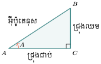
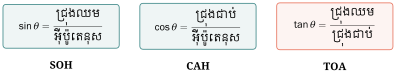
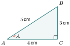
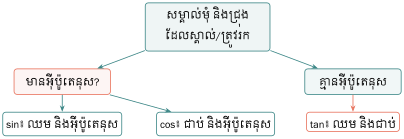
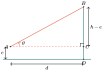
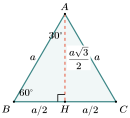
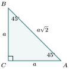
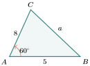
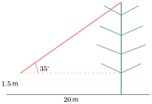

- កំណត់ជ្រុងឈម ជ្រុងជាប់ និងអ៊ីប៉ូតេនុសធៀបនឹងមុំស្រួចមួយ។
- ពន្យល់ថា ផលធៀបត្រីកោណមាត្រកើតពីលក្ខណៈដូចគ្នានៃត្រីកោណកែង។
- ប្រើ \(\displaystyle \sin\), \(\displaystyle \cos\) និង \(\displaystyle \tan\) ដើម្បីរកប្រវែងជ្រុង ឬរង្វាស់មុំ។
- ប្រើតម្លៃពិសេសនៃមុំ \(\displaystyle 30^\circ\), \(\displaystyle 45^\circ\) និង \(\displaystyle 60^\circ\)។
- បង្កើតគំរូ និងដោះស្រាយបញ្ហាជាក់ស្តែងដែលមានមុំលើ និងមុំចុះ។
សំណួរបើកមេរៀន
អ្នកឈរនៅលើដីអាចរកកម្ពស់ដើមឈើ ឬអគារដោយមិនចាំបាច់ឡើងទៅវាស់ផ្ទាល់។ តើត្រូវវាស់អ្វីខ្លះ? ក្នុងមេរៀននេះ យើងនឹងប្រើចម្ងាយផ្ដេក មុំលើ និង ផលធៀបជ្រុងនៃត្រីកោណកែង ដើម្បីឆ្លើយសំណួរនេះ។
រំលឹកចំណេះដឹងមុន៖ ក្នុងត្រីកោណកែង ជ្រុងដែលទល់នឹងមុំកែងហៅថា អ៊ីប៉ូតេនុស។ បើជ្រុងមុំកែងមានប្រវែង \(\displaystyle a,b\) និងអ៊ីប៉ូតេនុសមាន ប្រវែង \(\displaystyle c\) នោះ \(\displaystyle a^2+b^2=c^2\)។
1. ផលធៀបត្រីកោណមាត្រក្នុងត្រីកោណកែង
1.1. ឈ្មោះជ្រុងធៀបនឹងមុំ
ក្នុងត្រីកោណ \(\displaystyle ABC\) កែងត្រង់ \(\displaystyle C\) យើងពិនិត្យមុំស្រួច \(\displaystyle A\)៖

- \(\displaystyle AB\) ជា អ៊ីប៉ូតេនុស ព្រោះវាទល់នឹងមុំកែង។
- \(\displaystyle BC\) ជា ជ្រុងឈមមុំ \(\displaystyle A\)។
- \(\displaystyle AC\) ជា ជ្រុងជាប់មុំ \(\displaystyle A\) ដែលមិនមែនជាអ៊ីប៉ូតេនុស។
ចំណាំ៖ ពាក្យ “ឈម” និង “ជាប់” ប្រែប្រួលតាមមុំដែលយើងកំពុងពិនិត្យ ប៉ុន្តែអ៊ីប៉ូតេនុសមិនប្រែប្រួលទេ។
1.2. ហេតុអ្វីផលធៀបជ្រុងអាស្រ័យតែលើមុំ?
ត្រីកោណកែងពីរដែលមានមុំស្រួចមួយស្មើគ្នា ជាត្រីកោណដូចគ្នាតាមករណី មុំ–មុំ។ ដូច្នេះ ផលធៀបរវាងជ្រុងត្រូវគ្នារបស់វាស្មើគ្នា។ នេះមានន័យថា សម្រាប់មុំ \(\displaystyle A\) មួយ តម្លៃ \(\displaystyle \frac{\text{ជ្រុងឈម}\rule[-0.5em]{0pt}{1.55em}}{\text{អ៊ីប៉ូតេនុស}\rule[-0.5em]{0pt}{1.55em}}\), \(\displaystyle \frac{\text{ជ្រុងជាប់}\rule[-0.5em]{0pt}{1.55em}}{\text{អ៊ីប៉ូតេនុស}\rule[-0.5em]{0pt}{1.55em}}\) និង \(\displaystyle \frac{\text{ជ្រុងឈម}\rule[-0.5em]{0pt}{1.55em}}{\text{ជ្រុងជាប់}\rule[-0.5em]{0pt}{1.55em}}\) នៅថេរ ទោះបីត្រីកោណធំ ឬតូចក៏ដោយ។
1.3. និយមន័យ sine, cosine និង tangent

ក្នុងត្រីកោណកែងដែលមានមុំស្រួច \(\displaystyle \theta\)៖
លំហាត់គំរូទី 1 ត្រីកោណ \(\displaystyle ABC\) កែងត្រង់ \(\displaystyle C\) មាន \(\displaystyle BC=3\,\mathrm{cm}\), \(\displaystyle AC=4\,\mathrm{cm}\) និង \(\displaystyle AB=5\,\mathrm{cm}\)។ រក \(\displaystyle \sin A,\cos A\) និង \(\displaystyle \tan A\)។

ដំណោះស្រាយ
ពិនិត្យការយល់ដឹង សម្រាប់ត្រីកោណដដែល សរសេរ \(\displaystyle \sin B,\cos B\) និង \(\displaystyle \tan B\)។
2. រកជ្រុង និងមុំដែលមិនស្គាល់
2.1. ជ្រើសរើសផលធៀបត្រឹមត្រូវ

- គូស ឬសម្គាល់ត្រីកោណកែង និងមុំដែលពាក់ព័ន្ធ។
- ដាក់ឈ្មោះជ្រុងថា ឈម ជាប់ ឬអ៊ីប៉ូតេនុស។
- ជ្រើស \(\displaystyle \sin,\cos\) ឬ \(\displaystyle \tan\) ដែលប្រើតែជ្រុងស្គាល់ និងជ្រុងត្រូវរក។
- សរសេរសមីការ រួចដោះស្រាយដោយរក្សាទុកតម្លៃក្នុងម៉ាស៊ីនគិតលេខ មិនបង្គត់មុនពេក។
- ពិនិត្យឯកតា និងថាចម្លើយសមហេតុផលឬទេ។
ប្រើម៉ាស៊ីនគិតលេខ៖ ត្រូវកំណត់ម៉ាស៊ីនគិតលេខនៅរបៀបដឺក្រេ (DEG)។ ដើម្បីរកមុំពីផលធៀប ប្រើអនុគមន៍បញ្ច្រាស \(\displaystyle \sin^{-1}\), \(\displaystyle \cos^{-1}\) ឬ \(\displaystyle \tan^{-1}\)។ សញ្ញា \(\displaystyle \sin^{-1}\) មានន័យថា “inverse sine” មិនមែន \(\displaystyle \frac1{\sin}\) ទេ។
លំហាត់គំរូទី 2៖ រកជ្រុង ត្រីកោណកែងមួយមានមុំ \(\displaystyle 38^\circ\) និងអ៊ីប៉ូតេនុស \(\displaystyle 12\,\mathrm{cm}\)។ រកជ្រុងឈមមុំ \(\displaystyle 38^\circ\)។
ដំណោះស្រាយ តាងជ្រុងត្រូវរកដោយ \(\displaystyle x\)។ ដោយស្គាល់ជ្រុងឈម និងអ៊ីប៉ូតេនុស យើងប្រើ sine៖
ដូចនេះ \(\displaystyle x\approx7.4\,\mathrm{cm}\) បង្គត់ត្រឹម \(\displaystyle 0.1\,\mathrm{cm}\)។
លំហាត់គំរូទី 3៖ រកមុំ ជណ្ដើរប្រវែង \(\displaystyle 5\,\mathrm{m}\) ផ្អែកនឹងជញ្ជាំង ហើយជើងជណ្ដើរឃ្លាតពីជញ្ជាំង \(\displaystyle 3\,\mathrm{m}\)។ រកមុំ \(\displaystyle \theta\) រវាងជណ្ដើរ និងដី។
ដំណោះស្រាយ
ដូចនេះ \(\displaystyle \theta\approx53.1^\circ\)។
កំហុសដែលជួបញឹកញាប់
- ជ្រើសជ្រុង “ជាប់” ដោយភ្លេចថាអ៊ីប៉ូតេនុសមិនត្រូវហៅថាជ្រុងជាប់។
- ប្រើ \(\displaystyle \tan\) ទោះបីទិន្នន័យមានអ៊ីប៉ូតេនុស។
- ដាក់ម៉ាស៊ីនគិតលេខនៅរបៀបរ៉ាដ្យង់ (RAD)។
- បង្គត់តម្លៃនៅជំហានកណ្ដាល បណ្ដាលឱ្យចម្លើយចុងក្រោយខុស។
3. មុំលើ មុំចុះ និងការបង្កើតគំរូ
3.1. មុំលើ និងមុំចុះ
- មុំលើ ជាមុំរវាងបន្ទាត់ផ្ដេក និងបន្ទាត់មើលឡើងលើ។
- មុំចុះ ជាមុំរវាងបន្ទាត់ផ្ដេក និងបន្ទាត់មើលចុះក្រោម។

ក្នុងរូប បើអ្នកសង្កេតនៅកម្ពស់ \(\displaystyle e\) ពីដី ឈរចម្ងាយផ្ដេក \(\displaystyle d\) ពីវត្ថុ និងវាស់មុំលើបាន \(\displaystyle \theta\) នោះ
លំហាត់គំរូទី 4៖ កម្ពស់ដងទង់ជាតិ ឧបករណ៍វាស់នៅកម្ពស់ \(\displaystyle 1.5\,\mathrm{m}\) ពីដី និងនៅចម្ងាយ \(\displaystyle 18\,\mathrm{m}\) ពីគល់ដងទង់ជាតិ។ មុំលើទៅកំពូលស្មើ \(\displaystyle 32^\circ\)។ រកកម្ពស់ដងទង់ជាតិ។
ដំណោះស្រាយ
ដូចនេះ ដងទង់ជាតិមានកម្ពស់ប្រហែល \(\displaystyle 12.8\,\mathrm{m}\)។
ការបកស្រាយភាពត្រឹមត្រូវ បើចម្ងាយ ឬមុំវាស់បានមិនត្រឹមត្រូវ ចម្លើយកម្ពស់ក៏មានកំហុសដែរ។ យើងគួរបង្គត់ចម្លើយឱ្យសមស្របនឹងភាពត្រឹមត្រូវនៃទិន្នន័យ ហើយមិនគួររាយការណ៍ខ្ទង់ច្រើនជាងការវាស់ជាក់ស្ដែងទេ។
4. តម្លៃពិសេស
4.1. មុំ \(\displaystyle 30^\circ\) និង \(\displaystyle 60^\circ\)
បំបែកត្រីកោណសម័ង្សជ្រុង \(\displaystyle a\) ដោយកម្ពស់មួយ៖

តាមទ្រឹស្ដីបទពីតាករ កម្ពស់ស្មើ \(\displaystyle \frac{a\sqrt3}{2}\)។ ដូច្នេះ
4.2. មុំ \(\displaystyle 45^\circ\)

ក្នុងត្រីកោណកែងសមបាត ជ្រុងមុំកែងទាំងពីរស្មើ \(\displaystyle a\) និងអ៊ីប៉ូតេនុស ស្មើ \(\displaystyle a\sqrt2\)។ ដូច្នេះ
| \(\displaystyle \theta\) | \(\displaystyle 30^\circ\) | \(\displaystyle 45^\circ\) | \(\displaystyle 60^\circ\) |
| \(\displaystyle \sin\theta\) | \(\displaystyle \frac12\) | \(\displaystyle \frac{\sqrt2}{2}\) | \(\displaystyle \frac{\sqrt3}{2}\) |
| \(\displaystyle \cos\theta\) | \(\displaystyle \frac{\sqrt3}{2}\) | \(\displaystyle \frac{\sqrt2}{2}\) | \(\displaystyle \frac12\) |
| \(\displaystyle \tan\theta\) | \(\displaystyle \frac{\sqrt3}{3}\) | \(\displaystyle 1\) | \(\displaystyle \sqrt3\) |
លំហាត់គំរូទី 5 រកប្រវែង \(\displaystyle x\) បើ \(\displaystyle x\) ជាជ្រុងឈមមុំ \(\displaystyle 60^\circ\) និងជ្រុងជាប់មានប្រវែង \(\displaystyle 8\,\mathrm{cm}\)។
5. ទំនាក់ទំនងសំខាន់
សម្រាប់មុំស្រួច \(\displaystyle A\) ក្នុងត្រីកោណកែង៖
បើ \(\displaystyle A+B=90^\circ\) នោះមុំ \(\displaystyle A\) និង \(\displaystyle B\) ជាមុំបំពេញគ្នា ហើយ
លំហាត់គំរូទី 6 បើ \(\displaystyle \sin A=\frac35\) និង \(\displaystyle A\) ជាមុំស្រួច រក \(\displaystyle \cos A\) និង \(\displaystyle \tan A\)។
ដំណោះស្រាយ
6. លំហាត់អនុវត្ត
ក. ជំនាញមូលដ្ឋាន
- ក្នុងត្រីកោណកែងមួយ សម្រាប់មុំ \(\displaystyle \theta\) គេមានជ្រុងឈម \(\displaystyle =5\), ជ្រុងជាប់ \(\displaystyle =12\) និងអ៊ីប៉ូតេនុស \(\displaystyle =13\)។ រក \(\displaystyle \sin\theta,\cos\theta\) និង \(\displaystyle \tan\theta\)។
រក \(\displaystyle x\) បង្គត់ត្រឹម \(\displaystyle 0.1\)៖
- \(\displaystyle \sin42^\circ=\frac{x}{15}\)
- \(\displaystyle \cos27^\circ=\frac{8}{x}\)
- \(\displaystyle \tan63^\circ=\frac{x}{9}\)
រក \(\displaystyle \theta\) បង្គត់ត្រឹម \(\displaystyle 0.1^\circ\)៖
- \(\displaystyle \tan\theta=\frac7{10}\)
- \(\displaystyle \sin\theta=\frac9{14}\)
- \(\displaystyle \cos\theta=0.36\)
ខ. ការគិតពិចារណា
- សិស្សម្នាក់សរសេរ \(\displaystyle \sin A=\frac{\text{ជ្រុងជាប់}\rule[-0.5em]{0pt}{1.55em}}{\text{អ៊ីប៉ូតេនុស}\rule[-0.5em]{0pt}{1.55em}}\)។ ពន្យល់កំហុស និងកែឱ្យត្រឹមត្រូវ។
- ដោយមិនប្រើម៉ាស៊ីនគិតលេខ ប្រៀបធៀប \(\displaystyle \sin30^\circ,\sin45^\circ,\sin60^\circ\) និងពន្យល់លំនាំ។
- បើ \(\displaystyle A+B=90^\circ\) និង \(\displaystyle \sin A=0.62\) តើ \(\displaystyle \cos B\) ស្មើប៉ុន្មាន? ពន្យល់ហេតុផល។
គ. បញ្ហាជាក់ស្ដែង
- ខ្សែយោងប្រវែង \(\displaystyle 14\,\mathrm{m}\) ចងពីកំពូលបង្គោលមកដី ហើយផ្ដុំជាមួយដីមុំ \(\displaystyle 58^\circ\)។ រកកម្ពស់បង្គោល។
- ពីចំណុចមួយចម្ងាយ \(\displaystyle 25\,\mathrm{m}\) ពីគល់អគារ គេវាស់មុំលើបាន \(\displaystyle 40^\circ\)។ ភ្នែកអ្នកវាស់នៅកម្ពស់ \(\displaystyle 1.6\,\mathrm{m}\)។ រកកម្ពស់អគារ។
- ផ្លូវឡើងមួយកើនកម្ពស់ \(\displaystyle 1.2\,\mathrm{m}\) ក្នុងចម្ងាយផ្ដេក \(\displaystyle 15\,\mathrm{m}\)។ រកមុំទំនោររបស់ផ្លូវ។
7. ផ្នែកពង្រីក៖ ត្រីកោណមិនកែង
ផ្នែកនេះសម្រាប់សិស្សដែលចង់ស្វែងយល់បន្ថែម។ សម្រាប់ត្រីកោណ \(\displaystyle ABC\) ដែល \(\displaystyle a,b,c\) ទល់នឹងមុំ \(\displaystyle A,B,C\) រៀងគ្នា៖
ជាច្បាប់កូស៊ីនុស និង
ជារូបមន្តផ្ទៃក្រឡាត្រីកោណ។

ឧទាហរណ៍ពង្រីក បើ \(\displaystyle b=8\), \(\displaystyle c=5\) និង \(\displaystyle A=60^\circ\) នោះ
សង្ខេបមេរៀន
វាយតម្លៃខ្លួនឯង ខ្ញុំអាច៖
- \(\displaystyle \bigcirc\) ជ្រើស \(\displaystyle \sin,\cos\) ឬ \(\displaystyle \tan\) បានត្រឹមត្រូវ។
- \(\displaystyle \bigcirc\) រកជ្រុង និងមុំក្នុងត្រីកោណកែង។
- \(\displaystyle \bigcirc\) ដោះស្រាយបញ្ហាមុំលើ និងពន្យល់ភាពត្រឹមត្រូវនៃចម្លើយ។
ការវាយតម្លៃសមត្ថភាព (PISA)
ត្រួតពិនិត្យដើមឈើ (Inspecting a Tree)

អ្នកជំនាញឈរចម្ងាយ \(\displaystyle 20\) m ពីដើមឈើ។ ឧបករណ៍នៅកម្ពស់ \(\displaystyle 1.5\) m ពីដី និងវាស់មុំលើទៅកំពូលដើមឈើបាន \(\displaystyle 35^\circ\)។ ឱ្យ \(\displaystyle \tan35^\circ\approx0.700\)។
សំណួរទី១៖ សរសេរសមីការត្រីកោណមាត្រសម្រាប់រកកម្ពស់ \(\displaystyle h\) របស់ដើមឈើ ដោយបង្ហាញថាកម្ពស់ឧបករណ៍ត្រូវបានរាប់បញ្ចូល។
ចម្លើយ៖
សំណួរទី២៖ គណនា \(\displaystyle h\)។ ចម្លើយ៖
សំណួរទី៣៖ បើចម្ងាយ \(\displaystyle 20\) m ត្រូវបានវាស់ខុសត្រឹម \(\displaystyle 0.5\) m តើកំហុសលើកម្ពស់ដែលគណនាបានប្រហែលប៉ុន្មានម៉ែត្រ? បង្ហាញវិធីគណនា។
ចម្លើយ៖
© ២០២៦ លោកគ្រូ សាន សុខលី · «គណិតវិទ្យាថ្នាក់ទី៩ បែបទំនើប» · រក្សាសិទ្ធិគ្រប់យ៉ាង។ សៀវភៅនេះកំពុងសរសេរ ខ្លឹមសារអាចនឹងកែប្រែ។